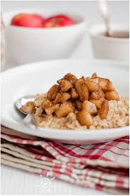
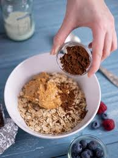
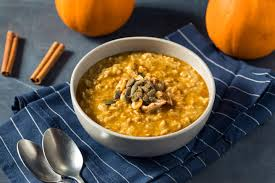
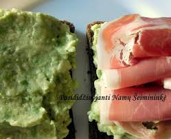
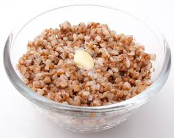
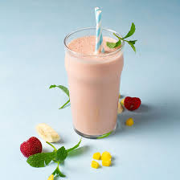
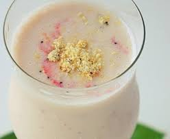
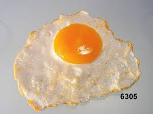
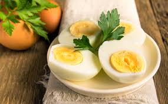

Avižinė košė su obuoliais ir cinamonu

Saldi, šilta košė su obuoliais ir kvapniu cinamonu.
Paruošimas:
- Užvirkite avižas su vandeniu arba pienu.
- Įdėkite obuolių gabalėlių ir žiupsnelį cinamono.
- Virkite 5–10 min, kol suminkštės.
- Patiekite su medumi ar riešutais.
Avižinė košė su riešutų sviestu

Sotus pasirinkimas su baltymingu riešutų sviestu.
Paruošimas:
- Paruoškite avižinę košę.
- Įmaišykite 1 šaukštą riešutų sviesto.
- Papuoškite bananais ar sėklomis.
Avižinė košė su slyvomis ir moliūgų sėklomis

Skaidulomis turtinga ir virškinimą gerinanti košė.
Paruošimas:
- Paruoškite košę kaip įprastai.
- Įmaišykite pjaustytas džiovintas slyvas.
- Apibarstykite moliūgų sėklomis.
Avokado užtepėlė su kumpiu

Kreminė avokado užtepėlė su sūriu akcentu.
Paruošimas:
- Sutrinkite avokadą su citrinos sultimis ir druska.
- Užtepkite ant skrudintos duonos.
- Uždėkite ploną kumpio griežinėlį.
Avokado užtepėlė su lašiša
Omega-3 turtingas ir gaivus pasirinkimas.
Paruošimas:
- Sutrinkite avokadą su trupučiu pipirų.
- Užtepkite ant trapučio arba skrudintos duonos.
- Uždėkite rūkytos lašišos juostelę.
Grikių košė

Klasikinė košė su sviestu ar uogomis.
Paruošimas:
- Išvirkite grikius santykiu 1:2 su vandeniu.
- Pagardinkite sviestu, druska ar uogiene.
Kefyro kokteilis su braškėmis ir špinatais

Žalias ir gaivus energijos kokteilis.
Paruošimas:
- Plakiklyje sumaišykite kefyrą, braškes ir špinatus.
- Pagal skonį įdėkite medaus.
Kefyro kokteilis su miško uogomis ir granola

Traškus ir salstelėjęs rytinis pasirinkimas.
Paruošimas:
- Plakiklyje sumaišykite kefyrą ir uogas.
- Supilkite į stiklinę ir užberkite granolos.
Keptas kiaušinis

Paprasčiausia klasika ant keptuvės.
Paruošimas:
- Įkaitinkite keptuvę su sviestu.
- Įmuškite kiaušinį, kepkite 2–3 min.
- Pagardinkite druska ir pipirais.
Virtas kiaušinis

Lengvai virškinamas ir baltymingas pasirinkimas.
Paruošimas:
- Įdėkite kiaušinį į verdantį vandenį.
- Virkite: 6 min – minkštas, 10 min – kietai.
- Atvėsinkite po šaltu vandeniu ir nulupkite.